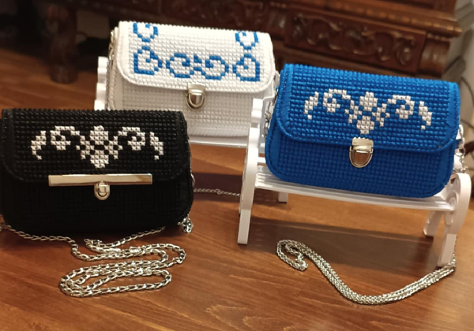
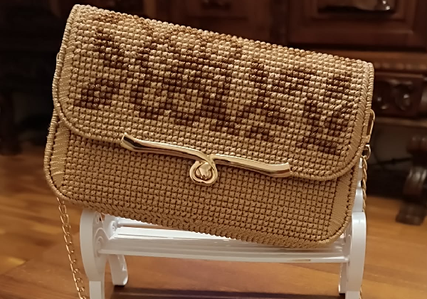
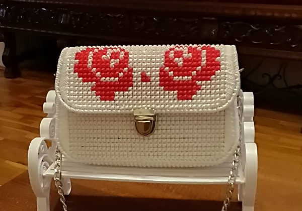
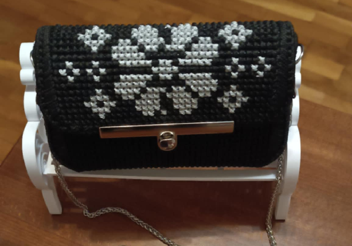
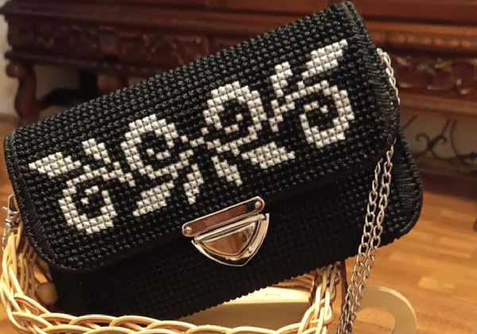

Kabelka ako
malé umelecké dielo
Vyšívané kabelky z macrame priadze sú kombináciou tradičného remesla a moderného dizajnu. Každý vzor vzniká postupne ručne, s dôrazom na detail, aby výsledok pôsobil jemne, elegantne a zároveň prakticky.
Naším cieľom je vytvárať doplnky, ktoré vydržia roky. Používame kvalitnú priadzu, pevné výstuže a starostlivo vyberáme farebné kombinácie, aby každá kabelka bola jedinečná a ľahko kombinovateľná s outfitom.

Najobľúbenejšie
Kúsky
Vybrali sme 3 najžiadanejšie typy kabeliek. Každý model sa dá upraviť podľa farby, veľkosti aj výšivky.

Crossbody kabelka
Praktický model na každý deň, ktorý sadne k šatám aj rifliam. Výšivka je vytvorená tak, aby kabelka pôsobila jemne a žensky. Vďaka pevnému dnu drží tvar aj pri bežnom nosení.

Mini kabelka
Ideálna na oslavy, rande alebo večerné podujatia. Aj keď je malá, zmestí sa do nej všetko potrebné. Ručné stehy vytvárajú originálny vzor, ktorý sa nedá napodobniť sériovou výrobou.

Kvetinová taška
Menší model vhodný na výlety alebo do práce alebo do kostola. Vnútorný priestor je dostatočne spevnený. Kabelka je navrhnutá tak, aby zvládla aj vyššiu záťaž bez deformácie.
Ukážky
výšiviek
Príbeh
VK Studio
VK Studio vzniklo z vášne pre ručnú tvorbu a z túžby vytvárať doplnky, ktoré nie sú len módnym trendom. Každá kabelka je výsledkom trpezlivosti, skúšania a detailnej práce.
Pri výrobe kombinujeme macrame techniky so starostlivou výšivkou. Naše kabelky sú spevnené, držia tvar a sú navrhnuté tak, aby sa dali nosiť každý deň.
Najviac nás teší, keď zákazníčka dostane kabelku, ktorá presne vystihuje jej štýl. Preto vyrábame aj modely na mieru a radi poradíme pri výbere farieb či výšivky.

Chceš kabelku
na mieru?
Napíš nám svoju predstavu. Spoločne vyberieme farby, veľkosť aj vzor výšivky a vytvoríme kabelku presne podľa tvojho štýlu.
Prejsť na kontaktNapíš nám
správu
Kontaktné údaje
Adresa: VK Studio, Košice
E-mail: info@vysivane-kabelky.sk
Telefón: +421 900 123 456
Odpovedáme do 48 hodín. Pri urgentnej objednávke napíš do správy požadovaný termín.